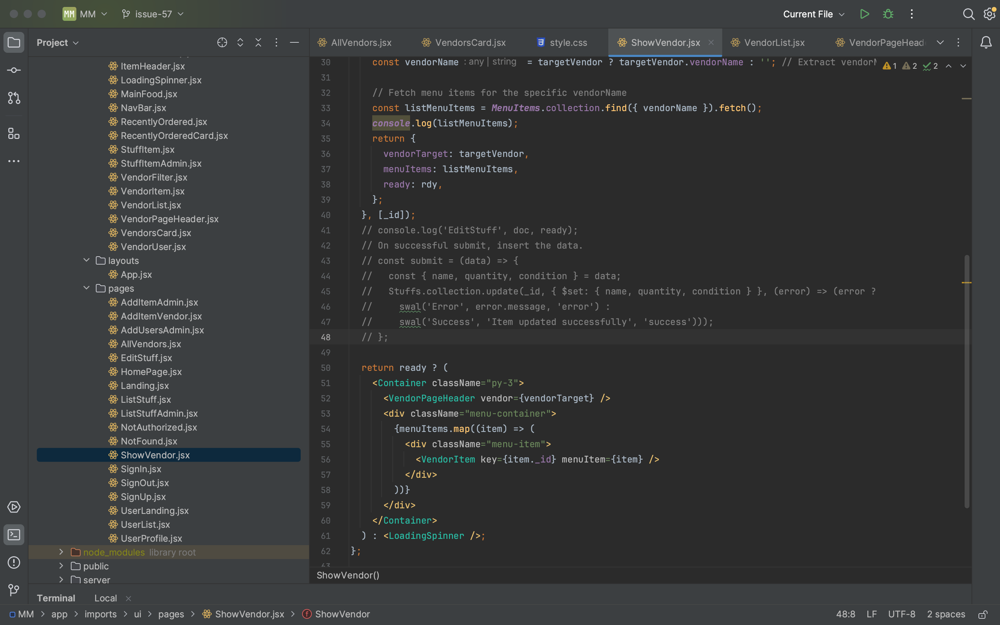
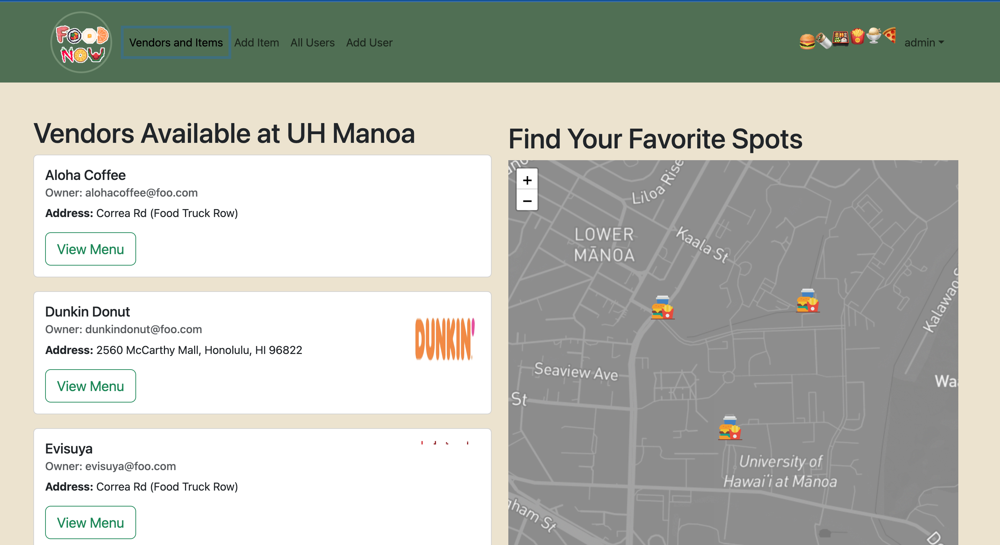
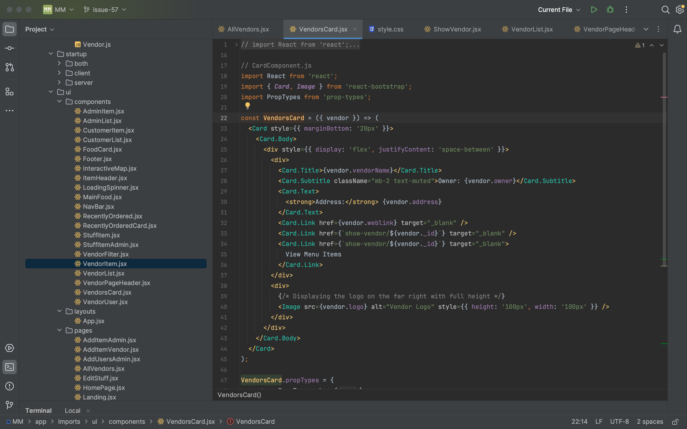
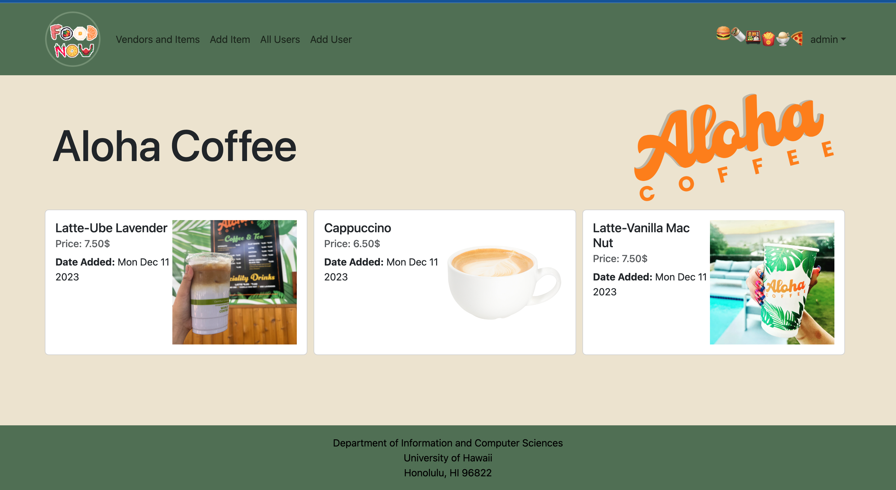

Remember that feeling of wandering around campus, lost in a sea of options, unsure where to grab a satisfying bite? Food-Now, a web app built by a dedicated team, aims to solve this dilemma for students and faculty at the University of Hawaii at Manoa.
Imagine an interactive map, dotted with vibrant icons representing campus food vendors. Click on one, and a full menu unfolds, showcasing culinary delights from around the globe. Food-Now empowers you to explore your options, from the familiar comfort of a campus cafe to the hidden gems tucked away in food trucks.
Food-Now isn’t just about mapping hunger. It’s a comprehensive platform offering:
 
As a member of the Food-Now team, I played a key role in shaping the user experience. Here’s how I contributed:
Maintaining the Home Plate: I played a central role in keeping the organization’s home page fresh and informative, ensuring it reflects the project’s latest developments.
 
Food-Now wasn’t just a project; it was a learning journey. Here’s what I discovered:
Food-Now is a project in constant evolution, and I’m excited to see it grow. We envision adding features like food reviews, personalized recommendations, and even delivery options.
Ready to explore the culinary landscape of UH Manoa?
Visit our website: here
Dive into the code and contribute your own culinary flair: here
Food-Now is more than just a web app; it’s a community built around the shared love of food. Join us on this delicious journey, one bite at a time!.